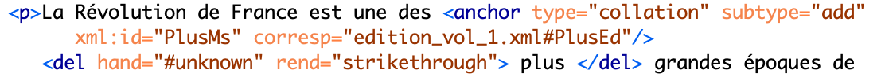
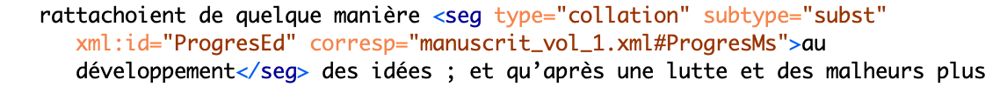

Cette édition étant un prototype, le but est d’abord de tester les différentes fonctionnalités et les différents outils pour voir s’ils répondent de manière efficace aux objectifs du projet. Les utilisateurs pourrons ainsi voir les premiers résultats de ce travail qui seront ensuite analysés pour définir les améliorations à apporter. Les caractéristiques techniques que nous décrivons ici peuvent donc subir des modifications importantes en fonctions des nouveaux choix opérés.
Principes d’encodage
Assurer l’interopérabilité et la pérennisation des données sur le long terme a été
une des principales règles de cette édition qui nous ont conduit à choisir des
standards ouverts et largement utilisés par la communauté scientifique comme les
langages XML, HTML, XSLT et les recommandations TEI.
Un autre objectif était
de faire figurer les différentes écritures relevées dans le manuscrit et de comparer
celui-ci avec la première édition sans laisser entendre que, pour assurer la plus
grande fidélité aux intentions de l’auteur, le choix éditorial s’était exprimé de
quelque manière en faveur d’un élément plutôt que d’un autre (variantes de Staël
vs interventions allographes ou bien manuscrit vs première
édition). Il fallait donc représenter ces phénomènes de manière non hiérarchisée
tout en respectant les normes d’encodage et la lisibilité.
Un autre problème
a dû être affronté pour l’affichage des contenus dans la page web : les
différentes écritures devaient être identifiables immédiatement et la navigation
entre manuscrit et première édition devait être rapide et intuitive. Tout ceci
devait enfin être exprimé à travers un code lisible et conforme aux recommandations
sur l’accessibilité du World Wide Web Consortium (W3C). Ce que l’on voit
actuellement dans ce site web représente ainsi un premier compromis qui a pu être
atteint entre ces différentes exigences.
Ce travail se base sur la distinction source-output qui prévoit deux niveaux de granularité : dans le fichier XML-TEI l'annotation est plus détaillée, alors que l'affichage des données présente une granularité inférieure. Les raisons de ce choix reposent sur l'état expérimental de ce travail du point de vue technique : de nouvelles informations seront graduellement affichées quand le test sur le rendu final aura montré son efficacité à l'égard de la facilité d'utilisation.
Nous décrivons ci-après les pratiques de balisage en rappelant que dans la page de chaque document il est possible de télécharger le fichier XML correspondant. Le schéma de balisage est d'ailleurs disponible dans l'ODD (One Document Does-it-all).
Encodage en XML-TEI
L’encodage des textes se base sur le langage XML et les P5 Guidelines de la TEI pour sa structuration. La personnalisation du schéma reste en tout cas conforme aux recommandations TEI, et ce pour assurer le plus haut niveau d’interopérabilité. Pour des raisons analogues, nous avons utilisé des standards tels que UTF-8 pour le codage des caractères, ISO 8601 pour les dates, ISO 639-1:2002 pour les langues, ISO 3166 pour le code pays et des identifiants uniques pour les personnes (ISNI, VIAF ou Wikidata), les lieux (GeoNames) et les titres d’ouvrages (Wikidata).
Balisage physique : contribuer à une meilleure connaissance des
manuscrits de Staël et de sa manière de travailler est un autre objectif de ce
projet. Des métadonnées et un encodage du texte plus détaillés sur cet aspect sont
donc un travail qui a été prévu dans ses phases ultérieures. Pour l’instant, ces
informations ne sont que partiellement confiées aux fac-similé introduit à l’aide de
l’attribut @facs dans <pb> qui marque le début d’une nouvelle page.
La
pagination que nous avons adoptée est celle de la BnF qui a été introduite de
manière régulière dans tous les trois volumes. La pagination manuscrite, placée
normalement en haut à gauche de chaque page, est beaucoup plus irrégulière parce que
elle est le résultat des différents déplacements de feuillets. Nous l'avons décrite
à l'aide de l'élément <fw> suivi de @type="pageNum".
D’autres
informations sur la page comme le numéro de cahier (manuscrit) ou le titre courant
(première édition) sont introduites à l’aide de <fw> qui est toujours suivi
des attributs @type et @place.
L’élément <hi> enfin est utilisé avec
@rend pour mettre en évidence des mots ou des lettres graphiquement distincts du
reste comme, par exemple, une lettre en exposant.
Ces informations ne figurent
que dans le fichier XML.
Balisage logique : la subdivision du texte est exprimée par l’élément
<div> toujours suivi de @type pour indiquer la typologie de la section
(préface, chapitre, partie) et, le cas échéant, de @n pour indiquer le numéro
progressif correspondant. En particulier, l'attribut @type a été introduit pour
préciser sémantiquement des éléments employés pour différents objets (<div>,
<fw>, <head>, etc.) surtout dans les cas où l'on prévoyait d'appliquer
un style particulier. Pour les subdivisions entièrement rédigées par une seule main,
l’attribut @hand a été introduit dans <div> tandis que le changement de
copiste est signalé par <handShift> suivi de @scribeRef.
Balisage sémantique : le plus grand enjeu a été de trouver des balises
indiquant clairement les différentes interventions dans le manuscrit tout en
laissant le code lisible et conforme à la TEI. Il fallait en même temps penser au
rendu final dans la page web qui devait les représenter de manière claire. Ce
travail s’est vu compliqué par la superposition d’autres balises relatives aux
entités nommés ou à la collation entre manuscrit et première édition : un mot,
un syntagme ou un paragraphe peut, en effet, être intéressé par plusieurs phénomènes
et cela peut surcharger le texte de code et créer des problèmes de lisibilité de la
page web à cause de la superposition de différents signes indiquant ces phénomènes.
Pour l'instant, nous avons donc opté pour une annotation minimale.
À cause de
problèmes techniques en cours de solution, nous avons choisi de signaler toutes les
variantes des différents scripteurs d'après la méthode “location-referenced” et la
position “internal” de l’apparat critique, c’est-à-dire dans le texte. Cependant,
comme l'objectif est de ne pas surcharger le texte avec beaucoup d’annotations, nous
envisageons de déplacer tout ce qui relève de l'apparat critique (notes éditoriale,
variantes, modernisation et correction) dans le <standOff> ou dans un fichier
extérieur. Voici, par exemple, une substitution de Staël : 
Tout type d’intervention est marquée par l’attribut @hand pour pouvoir
distinguer les différents scripteurs dont la liste a été crée dans le
<handDesc> du <teiHeader>. Le changement de copiste est signalé de cette
manière : <handShift scribeRef="#randallF"/>. L'utilisation de @hand et
@scribeRef permet de distinguer les différentes foncions des scripteurs. Il arrive,
en effet, qu’une même personne est tantôt copiste à certains endroits et tantôt
auteur de variantes dans d’autres.
Dans le cas de plus d'une substitution
faisant partie d'une intervention unique, nous avons pris pour base la section
"11.3.1.5 Substitutions" des "P5 TEI Guidelines" qui considère l'encodage suivant
comme ayant une foction analogue à <subst> :
L'ordre des interventions est indiqué par @varSeq, tandis que @rend restitue la
manière dont elles sont effectuées. En particulier, l'élément <add> emboîté
dans <del> indique une addition qui a été ensuite rayée. Pour distinguer dans
les différents <add> ce qui fait partie d'une substition de ce qui est une
addition tout court, nous avons ajouté pour ces dernières l'attribut
@type="addition".
Nous avons évité l'utilisation de <lem> s'oppsant à
<rdg> et indiquant la leçon préférée par l'éditeur scientifique ou, en tout
cas, celle qui ferait partie d'un texte de base. Au contraire, nous avons essayé de
donner une représentation non hiérachisée des leçons des différents scripteurs comme
étant toutes potentiellement acceptables sur la base de nos principes éditoriaux et
des caractéristiques du manuscrit décrites dans l'introduction.
Quant à la
collation entre manuscrit et première édition, il fallait, dans ce cas également,
opérer des choix de modélisation de manière à ne pas établir une hiérarchie entre
les deux versions. Nous sommes en train de tester les différentes options qui
doivent, en tout cas, assurer la lisibilité du texte encodé. Une solution provisoire
a été trouvée avec l'élément <anchor> fonctionnant comme hyperlien entre les
deux textes et permettant leur comparaison à l'endroit où une variation a été
détectée. Voici, par exemple, le mot ≪ plus ≫ qui est présent
dans le manuscrit mais non pas dans la première édition :

L'élément <anchor> et l'attribut @corresp, qui introduit le lien vers
le point correspondant de la première édition identifié par un @xml:id, ne sont pas
très caractérisés du point de vue sémantique, l'attribut @corresp ayant la fonction
de pointer ≪ to elements that correspond to the current element in some
way ≫ (TEI Guidelines). Ils ont donc été considérés comme aptes à établir des
liens génériques entre les deux versions sans marquer une prééminence de l'une sur
l'autre. Comme <anchor> peut être utilisé avec d'autres fonctions, l'attribut
@type suivi de la valeur ≪ collation ≫ est nécessaire. Le type
de divergence est signalé par l'introduction de @subtype suivi des valeurs
≪ add ≫ (mot ou phrase présents dans le document courant
seulement), ≪ gap ≫ (mot ou phrase absents du document courant
seulement) ou ≪ subst ≫ (mot ou phrase du manuscrit qui ont
été remplacés dans la première édition). Les valeurs ≪ add ≫
et ≪ gap ≫ pourraient prêter à confusion car des éléments
ayant le même nom mais un sémantisme différent existent déjè dans la TEI : on
pourra donc envisager de définir des valeurs différentes. Cette utilisation
particulière de l'élément <anchor> offre des avantages et des
inconvénients : il permet d'éviter l'effet de superposion éventuelle avec
d'autres balises intéressant le même segment scriptural mais il n'indique pas
l'extension précise de ce segment affecté par une variation entre les deux
documents. Il faudra donc trouver une autre solution qui puisse laisser, en même
temps, le code léger. Ce problème a été partiellement surmonté dans la première
édition qui est marquée par une annotation peu détaillée. Ici l'élément
<anchor> est utilisé uniquement pour indiquer une lacune par rapport au
manuscrit. L'élément <seg> a été considéré, dans ce cas, plus efficace car il
permet de délimiter le mot ou le passage où les deux documents divergent. Voici un
exemple relatif au syntagme ≪ au développement ≫ :

La modernisation et les corrections sont encadrées dans <choice>
pour pouvoir enregistrer la version originale et celle qui a été choisie par
l'éditeur scientifique. En ce qui concerne les notes, elles ont été différenciées
sur la base de l'auteur de la note, à savoir l’éditeur scientifique ou Staël. Dans
le texte, l’élément <note> est donc suivi de @resp renvoyant à l’un des deux.
Comme nous avons dit plus haut, le but du travail futur est de déplacer
certaines données et leur encodage comme, par exemple, l'apparat critique
extérieurement au texte. Ce travail a été fait pour l'index des noms. Dans le texte,
le balisage onomastique est marqué par <rs> suivi de @ref renvoyant aux
données correspondantes dans l'index des noms qui se bornent pour l'instant aux
noms, prénoms, dates de naissance et de mort :

Ces éléments on été considérés comme le minimum indispensable pour
l'identification. Pour les noms des villes, seulement le nom du pays correspondant a
été introduit. Dans tous ces cas, l'attribut @ref a été ajouté pour renvoyer à un
identifiant unique.
Pour l'index des ouvrages cités, une solution
sémantiquement satisfaisante et en même temps conforme à la TEI n'a pas encore été
trouvée. Voici une solution provisoire :
La liste des ouvrages a été créée à l'aide des éléments <index> et
<term>. Comme ce dernier n'aide pas à l'identification des objets décrits,
cette fonction est confiée à l'attribut @type dans <objectName> pour les
ouvrages et dans <name> pour les auteurs.
Encodage en HTML et CSS
Les fichiers XML ont été transformés en HTML à travers le langage de transformation XSLT. Quant à l'affichage web des contenus, le balisage en HTML5 est conforme aux recommandations du World Wide Web Consortium (W3C) relativement à l'accessibilité des différents appareils mobiles. Voici les principales mesures adoptées :
- ajout de la métadonnée Meta Viewport pour l'adaptation du texte aux fenêtres d'affichage des différents appareils : <meta name="viewport" content="width=device-width, initial-scale=1.0">;
- choix de polices de caractères installées dans la plupart des navigateurs (Arial) ;
- ajout, dans la propriété "font-family" des feuilles de style CSS, de polices de caractères ultérieures (Verdana, sans-serif) au cas où la première ne fonctionnerait pas.
- les feuilles de style CSS, autre langage standard, sont placées dans un fichier externe pour permettre un chargement des pages plus rapide ;
- dans les CSS, seules les unités de mesure relatives ≪ rem ≫ (≪ root em ≫), ≪ vw ≫ (≪ viewport width ≫) et ≪ % ≫ ont été utilisées pour l'adaptation des dimensions dans la fenêtre d'affichage des différents dispositifs ;
- utilisation de formats standards pour les fichiers des images (≪ JPEG ≫ ou ≪ PNG ≫) qui, grâce à leur compression, permettent un affichage plus rapide ;
- utilisation de certaines propriétés CSS pour un menu de navigation ≪ responsive ≫ comme, par exemple, le changement de couleur des liens au passage de la souris pour à montrer à l’utilisateur la page qu’il est en train de choisir.
Le site web ainsi conçu a été testé avec les navigateurs Microsoft Edge 108.0.1462.76, Google Chrome 108.0.5359.125, Firefox 72.0.2, Safari 16.5 and Android QKQ1.191215.002 pour vérifier le rendu final.
Outils
Une édition numérique conforme aux principes FAIR (Findable, Accessible, Interoperable, Reusable) devrait éviter les logiciels propriétaires qui n'assurent pas une utilisation universelle surtout sur le long terme. À l'exclusion d'Oxygen, tous les outils pour cette édition sont open source : Pencil pour le mockup, eScriptorium pour l'ocierisation des facsimilés de la première édition et Zotero pour la gestion de la bibliographie importée dans le site web.
Différentes raisons ont été déterminantes dans le choix d'Oxygen : la gestion de plusieurs langages standard (dans notre cas: XML, HTML, XSLT, CSS), la puissance du processeur pour la transformation des fichiers XML, la validation des documents contre le schéma TEI, l'autocomplétion pendant la saisie du code rendent Oxygen un outil relativement facile pour un travail d'édition à ces débuts.